以下よりダウンロードします：
Download VNC Viewer | VNC® Connect
［Download VNC Viewer］をクリック、［実行］をクリックします。
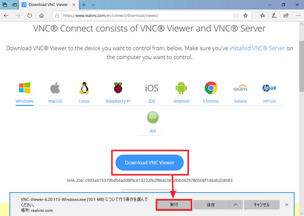
VNC-Viewer 6.21...exeをクリックします。
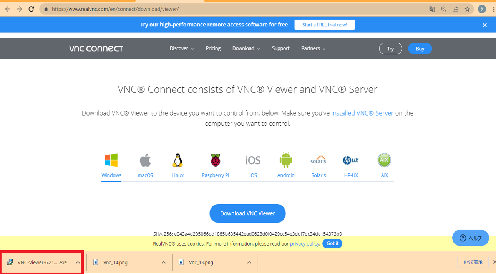
「Select the language to use during the installation:」と表示されたら［English］を選択し、［OK］をクリックします。
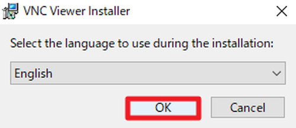
「VNC Viewer 6.x Setup」と表示されたら［Next］をクリックします。
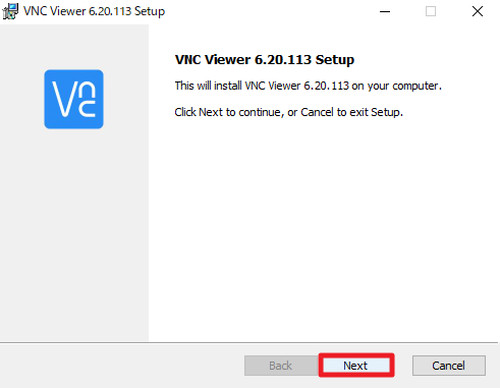
「End-User License Agreement」が表示されたら、内容をよく確認し、同意できる場合は［I accept the terms in the License Agreement］にチェックを入れ、［Next］をクリックします。
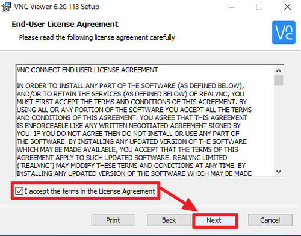
「Custom Setup」が表示されたら［Next］をクリックします。
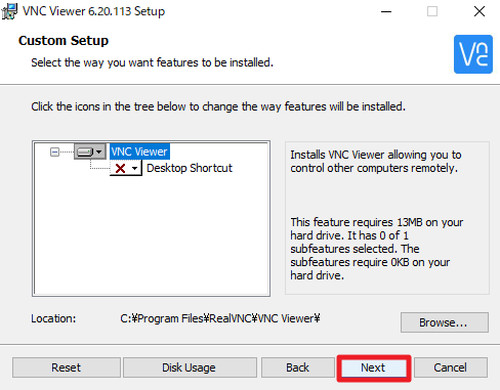
「Ready to install VNC Viewer 6.x」と表示されたら［Install］をクリックします。
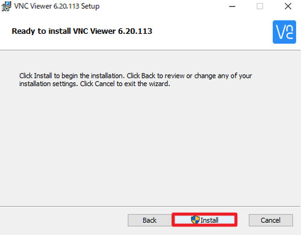
「ユーザー アカウント制御」が表示されたら［はい］をクリックします。
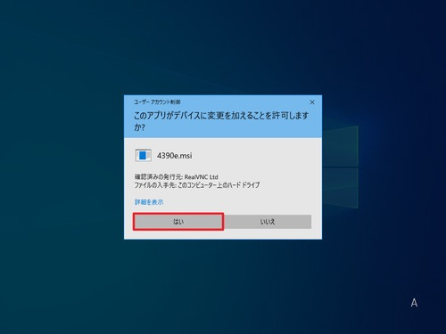
インストールが完了するまで待ちます。
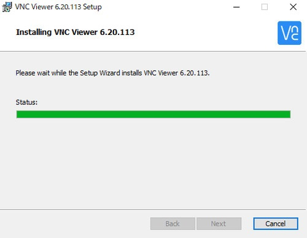
「Completed the VNC Viewer 6.x Setup Wizard」が表示されたら［Finish］をクリックします。
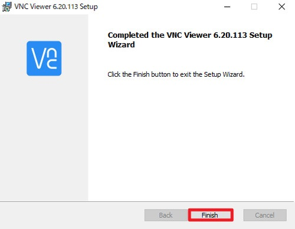
［スタート］をクリックし「RealVNC」内の［VNC Viewer］をクリックします。
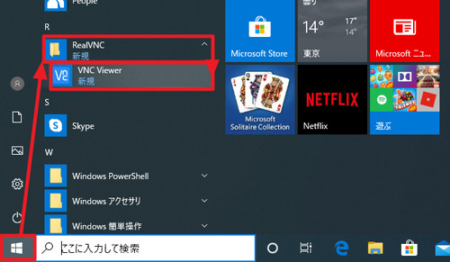
「Get started with VNC Viewer」が表示されたら［GOT IT］をクリックします。

このような画面が表示されたら完了です。
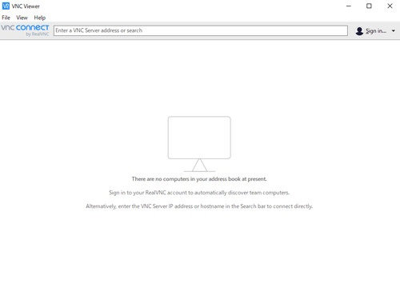